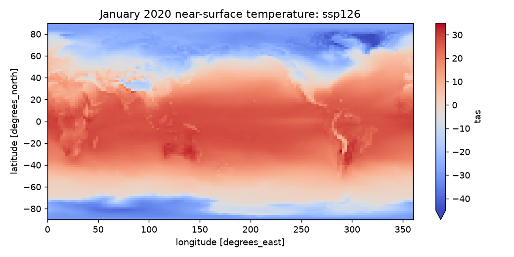
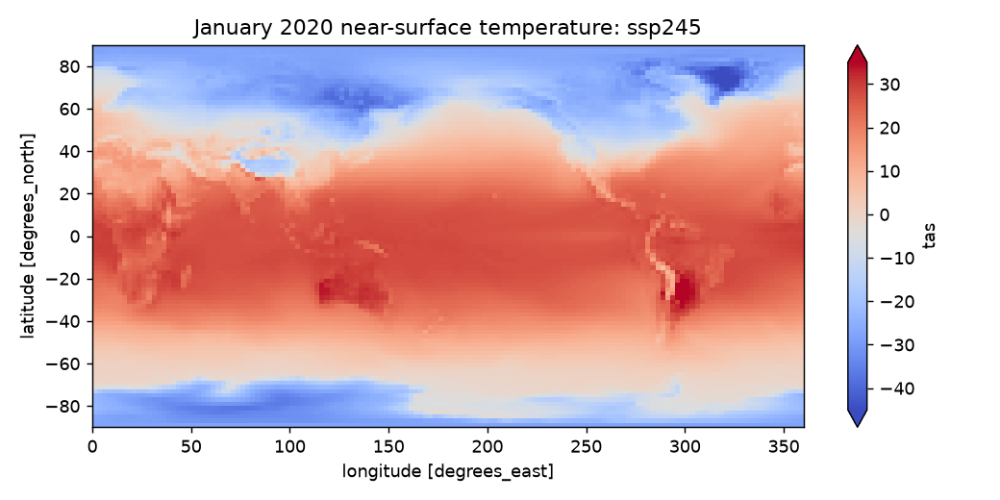
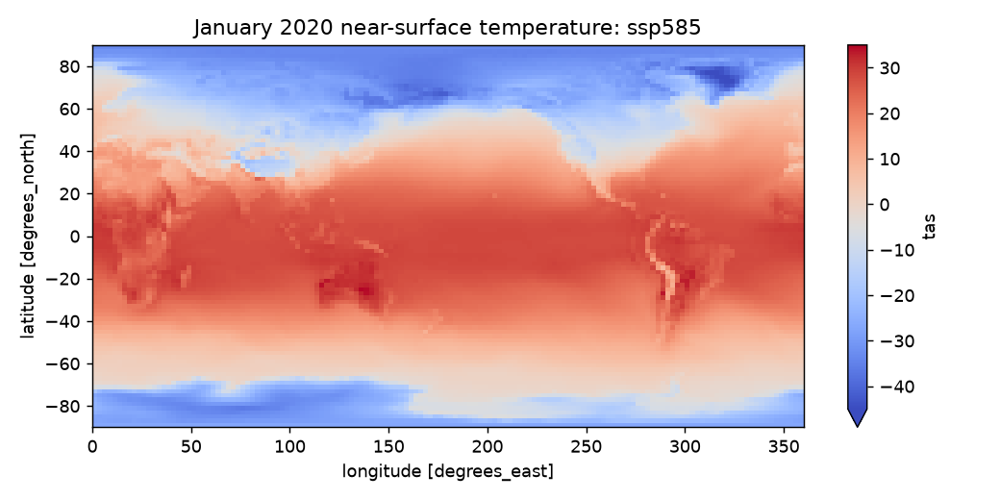
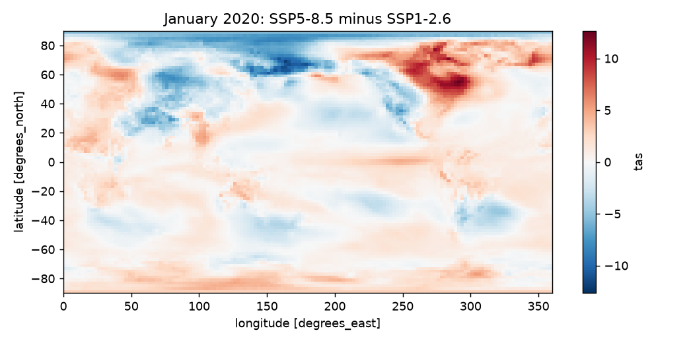
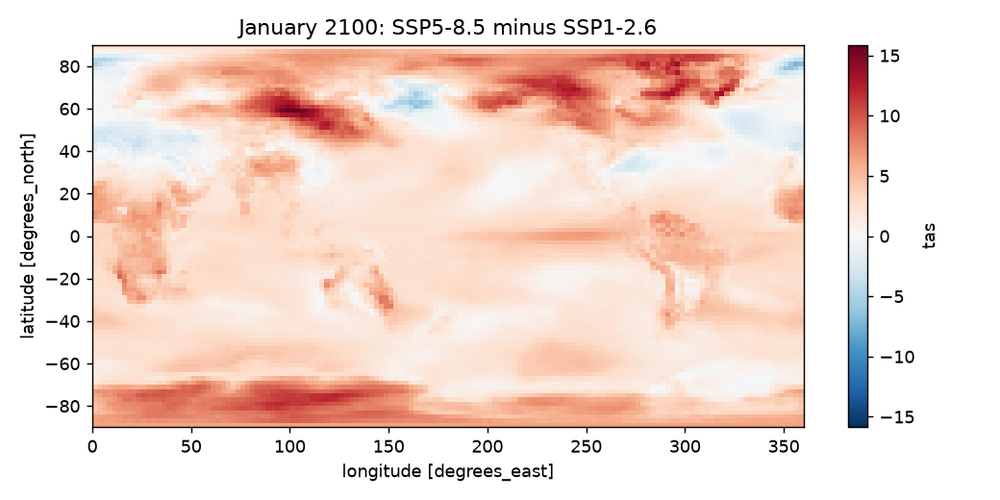
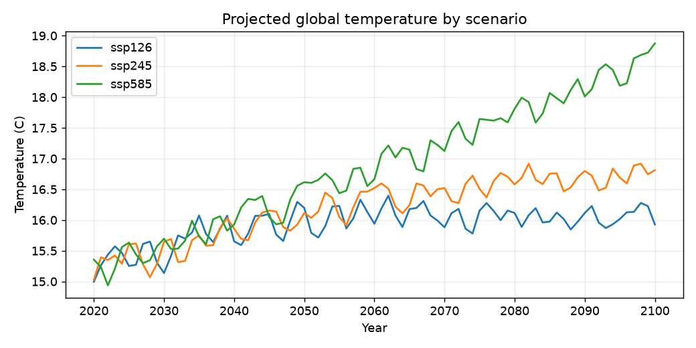

DSC 106 Project 3 Checkpoint
Two Futures, One Planet
Team 23: Don Le, Raynard Taneka, and Ethan Lam
Dataset: CMIP6 monthly near-surface air temperature from the NASA GISS model.
Question: Where could high emissions add the most heat compared with a low-emissions future?
We are comparing SSP5-8.5 with SSP1-2.6 across time. Our current direction is an interactive heatmap with year and month sliders.
Open the current D3 prototypeExploratory graphs





